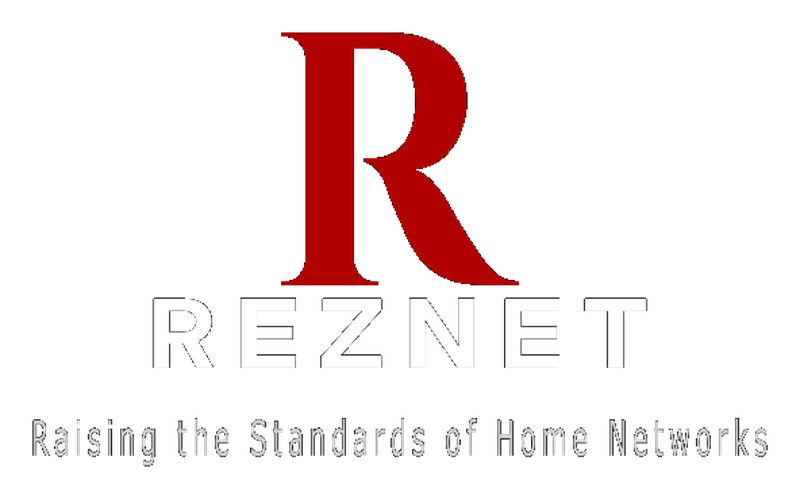

A device has a signal right now.
That is useful—but it is not proof that the home has a reliable, secure, scalable network foundation.

Residential Network InfrastructureTriad, North Carolina

RezNet provides inspection-grade network assessments and independent oversight so home networks are done once and done right.
No equipment pitch. No vendor agenda. No guessing from the number of Wi-Fi bars.
Illustrative assessment view — not a property result
01 / THE BLIND SPOT
A house can look fully modern while the digital infrastructure behind it is improvised, undocumented, and already at its limit.
You would not buy a home without checking the roof.
That is useful—but it is not proof that the home has a reliable, secure, scalable network foundation.
02 / THE DIFFERENCE
THE SURFACE
THE SYSTEM
03 / THE INSPECTION
Not one troublesome room. Not one router. Not one brand. The property.
Signal behavior, dead zones, overlap, neighboring congestion, and whether devices can move through the home reliably.
Accessible structured wiring, cable condition, pathway logic, termination quality, labeling, and usable backhaul.
Router, switch, access-point, gateway, and rack locations—plus the building materials and layout working for or against them.
How service enters the property, where systems converge, power and ventilation needs, accessibility, and future maintenance.
Whether the network can support the people, work, streaming, cameras, security, and smart-home systems the property depends on.
What exists, what is unknown, what should be corrected first, and how the home can grow without starting over.
04 / THE EVIDENCE
RezNet turns a hidden system into a documented property asset, with findings you can understand and act on.
RESIDENTIAL NETWORK ASSESSMENT
PROPERTY REVIEW
ILLUSTRATIVE REPORT STRUCTURE
Example of the information architecture—not a sample property score or fabricated result.
05 / THE METHOD
Each step earns the next. Recommendations come from the property—not assumptions or a sales quota.
Measure, observe, and document the network and the home around it.
Evidence before advice.Translate findings into a property-specific path that protects budget and future choices.
Design after discovery.Independently confirm that execution matches the agreed scope and documented intent.
Accountability after installation.06 / WHERE TO BEGIN
During pre-launch, RezNet reviews each request personally and confirms the right assessment before scheduling.
For homeowners dealing with unreliable performance, unexplained dead zones, piecemeal upgrades, or a network that must support more than it used to.
Recurring problems, renovations, work-from-home needs, cameras, smart systems, and future planning.
Coverage, interference, equipment placement, accessible wiring, capacity, service entry, organization, and readiness.
Documented findings, visual evidence as applicable, infrastructure grade, priorities, and a practical next-step roadmap.
For buyers who want to understand whether a property’s digital infrastructure supports modern life before the keys—and the surprises—are theirs.
Due diligence before closing, especially when remote work, streaming, security, or smart-home plans matter.
Accessible network wiring, equipment and service locations, likely coverage constraints, infrastructure risk, and upgrade readiness.
A plainspoken view of what is known, what is hidden, what may require investment, and what should happen after purchase.
Network design, implementation guidance, independent oversight, and verification are downstream services. RezNet recommends them only when the findings justify them.
07 / WHO WE HELP
Expose hidden infrastructure risk, stop buying equipment by trial and error, and make decisions from a documented view of the property.
Start with your propertyGive clients a credible resource without asking agents to become network experts—or leaving a modern home system out of due diligence.
Support a clientCoordinate pathways, cabling, access-point locations, service entry, and equipment space before walls close and options disappear.
Plan before drywallExecute from a clear, property-specific scope while RezNet remains the independent authority and does not compete for the installation.
Discuss a partnership08 / THE REZNET STANDARD
Your home should not become hostage to one installer, one vendor, or one app.
The assessment exists to reveal what the property needs—not to justify a shopping cart.
The owner should understand what was built, why it was built, and how it can be maintained.
Connected is not the same as reliable. Fast is not the same as well designed.
09 / WHY REZNET EXISTS
Bradon Hymes brings an industrial electrical background and more than 11 years of telecommunications field experience to RezNet.
Across that work, the same pattern kept appearing: homes were treated as collections of disconnected devices. One company handled the service line. Another pulled cable. Another sold Wi-Fi. Another added cameras. Very few people owned the architecture—and the homeowner inherited the confusion.
RezNet was built to change that. As a husband and father, Bradon’s goal is practical: give families clear evidence, freedom of choice, and a network foundation that does not need to be rediscovered every time something changes.
“The customer should own the understanding—not just the equipment.”
RezNet’s pre-launch services are limited to the capabilities and credentials accurately described on this site. No unearned license or certification is implied.
10 / PLAIN ANSWERS
Good infrastructure starts with the right questions. Here are the ones RezNet expects first.
No. RezNet independently evaluates the property’s network infrastructure and helps owners understand what exists, what is failing, and what should happen next.
No. RezNet is vendor-neutral. Recommendations are based on the property, performance needs, budget, and long-term ownership—not equipment commission.
Some pre-purchase infrastructure conditions can be evaluated without active service. RezNet will explain what can be confirmed, what remains unknown, and what should be tested after activation.
Visual deliverables depend on the property, assessment type, access, and whether active service is available. Heatmaps, annotated floor plans, and coverage findings are provided as applicable.
RezNet’s core role is assessment, planning, independent oversight, and verification. When implementation is appropriate, RezNet can help define scope and coordinate with qualified execution partners while preserving independent oversight.
RezNet is pre-launching in Winston-Salem, Greensboro, High Point, and surrounding NC Triad communities. Submit the property ZIP code and RezNet will confirm availability.
11 / START HERE
Tell RezNet about the property and the problem you are trying to solve. Every pre-launch request is reviewed before a service is recommended.
You describe the property and concern.
RezNet reviews the request and confirms fit.
You receive the right first step—not an automatic sales pitch.